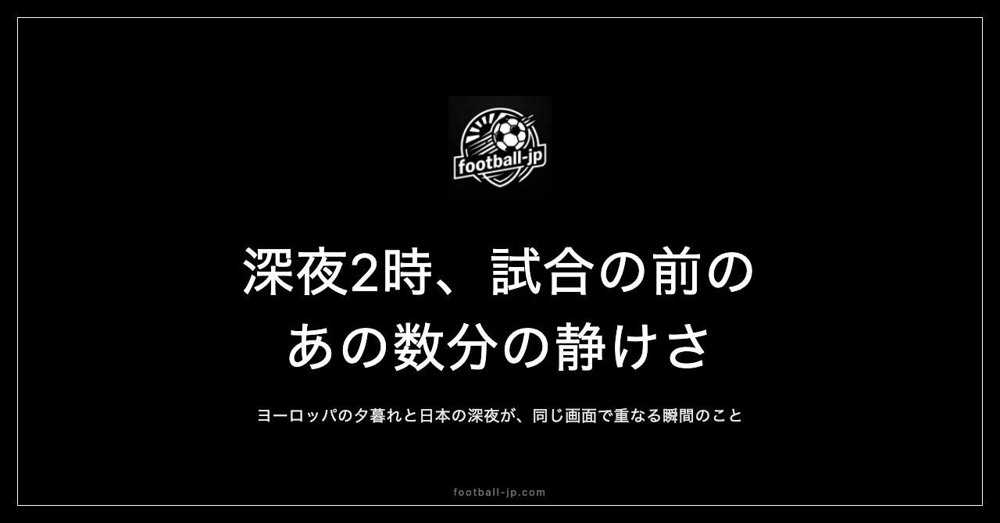

深夜2時、ヨーロッパの試合を見るために起きる、あの数分の静けさ
アラームが鳴る前に目が覚める。暗い部屋、キックオフまであと10分。この独特の静けさは、深夜観戦を続けた者だけが知る時間の質がある。日本の夜とヨーロッパの夕方が同じ画面の中で重なる、その瞬間の記録。

キックオフ前の数分が持つ特殊な時間の質
深夜2時に目が覚めたとき、しばらくは布団の中でじっとしている。完全に覚醒しているわけでも、眠り直せるわけでもない曖昧な状態——キックオフを待ちながら、暗い部屋の天井を眺める時間だ。外の音はほぼない。近所の住宅も静まり返っている。
この数分間に、頭の中の処理が止まる。昼間に積み残した案件も、翌日の予定も、この瞬間だけは頭から消える。「もうすぐ始まる」という感覚だけが残る。日中は複数のことを並行して考え続けるのが普通だが、深夜2時のキックオフ前はその並列処理がきれいに止まる。画面を開く前のほんの数分が、1日の中で最も現在に集中できる時間として機能している。
時差がつくる「同時性」の感覚
日本時間で深夜2時の試合は、ヨーロッパでは夕方18時前後にあたる。スタジアムには観客が続々と入場し、選手がウォームアップを始めている時間帯だ。布団の中からその映像をリアルタイムで受け取る——何度経験しても、この構図には独特の感覚が伴う。
録画でも同じ映像は観られる。しかし録画には「同時性」がない。深夜2時に起きているという行為は、現地の観客と同じ「今」を共有することに等しい。日本の深夜の静寂とイギリスの夕暮れの喧騒が、同じ画面の中に同時に存在する。その非対称な重なりが、深夜観戦を単なるコンテンツ消費と異なるものにしている。
暗い部屋に差し込むスタジアムの光
キックオフ直前に画面をつけると、スタジアムの光が部屋に入ってくる。秋のヨーロッパなら、金色がかった斜光がピッチに差し込んでいることもある。冬なら人工照明だけの白い光だ。その色が、暗い部屋の空気を変える。
音量は周囲への配慮で絞っているが、光だけは部屋全体に広がる。昼間に明るい室内で画面をつけても、この「光が入ってくる」感覚は再現できない。暗い部屋の中でスタジアムの照明だけが映えるこの体験は、深夜観戦にしかない視覚的な特権といえる。
小音量観戦が生む集中力の変化
深夜の観戦では音量を絞る。実況の声がかろうじて聞こえる程度——選手の声や歓声の細部は届かない。最初は「損をしている」と感じていたが、慣れると逆の気づきが来た。音量が小さいほうが、試合への集中度が上がる。
実況の誘導がなくなることで、プレーを自分の目で読もうとする意識が高まる。「今のがファウルか」「あのポジションはオフサイドか」——解説者が言及する前に自分で判断する時間が増える。小音量観戦は、サッカーを「聴くもの」から「見るもの」に変える。一人で試合と向き合う時間として、この静けさは理にかなっている。
試合前後の静けさは、質がまるで違う
深夜2時キックオフの試合が終わると、だいたい午前4時になる。余韻を抱えたまま布団に戻る。接戦や逆転ゴールがあった夜は興奮が残ってなかなか眠れないが、それを不快には感じない。
画面を消すと部屋は元の静けさに戻る。さっきまで満員スタジアムの歓声が響いていた空間が、また無音になる。試合前の静けさは「これから始まる」という予期のエネルギーを帯びている。試合後の静けさは「終わった」という充足と余韻を含んでいる。同じ静けさでも、中身がまったく異なる。この対比構造そのものが、深夜観戦の一つの体験として完結している。
一人で観ることで感情が純粋に残る理由
深夜2時の試合は必然的に一人で観ることになる。複数人で観戦する楽しさもある——得点シーンで同時に盛り上がれる体験はそれ自体に価値がある。しかし一人で観るときには、「感情がすべて自分だけのもの」という性質がある。
誰かと一緒に観ていると、その場の雰囲気が自分の感情に微妙に影響する。深夜に単独で観るとき、その外部影響がゼロになる。「今のプレーは素晴らしかった」という判断が、誰かの反応に引っ張られることなく自分の中に蓄積される。その純粋な蓄積が、翌日以降も「あのシーンはよかった」という鮮明な記憶として残る。
翌朝に余韻を持ち越す観戦サイクル
深夜観戦が終わって眠りにつくと、翌朝に試合の記憶が最も新鮮な状態で残っている。起き抜けにfootball-jp.comのデータを確認したり、SNSで試合の反応を追いかけたりするのが自然な流れになる。
観る→眠る→起きる→整理する、というサイクルが、試合への理解を深める。「観て終わり」ではなく、観た後の余韻まで含めて一つの観戦体験として完結している。翌朝の時間の質が変わるという点で、深夜観戦は翌日の過ごし方にも影響を及ぼす習慣だ。
深夜観戦を選び続ける論理
深夜に起きて試合を観る生活は、外から見れば非効率に映るかもしれない。しかしこれは能動的な選択の積み重ねだ。前日の夜に試合時間を確認し、アラームをセットして眠る——この準備行為そのものが「観ることを選ぶ」という意思表示になっている。
試合がある夜と試合がない夜の違いが、深夜2時の目覚めだけでわかるようになるころには、この習慣はすでに生活に組み込まれている。football-jp.comで試合時間を調べるのも、大抵は前夜か当日の早朝だ。深夜観戦のために作ったサイトを、深夜観戦のために使い続けている。あの数分の静けさがある限り、今夜も起きる。